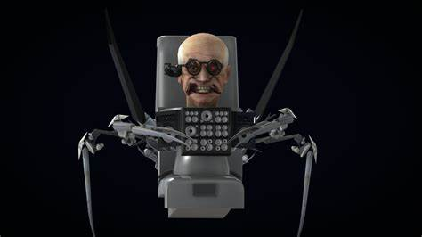

SKIBIDI TOILETS
Examen de los skibidi toilets
La principal historia de “skibidi toilet” tiene origen en la ciudad de Ohio, Estados Unidos, donde personas comenzaron
a usar retretes como asientos a raíz de una “moda viral” de internet. Sin embargo, algunas personas sufrieron
cambios extraños debido a fallos en la realidad que fusionaron sus cuerpos con el inodoro mismo, quedando
como una cabeza como su único aspecto humano. En la historia, los inodorosparlantes se convierten en una amenaza
para la humanidad, por lo que el gobierno inventó un ejército de hombres en traje con cámaras de seguridad en la cabeza.
Audio filtrado de los skibidi toilets:
Estos son los toiletes mas poderosos
Jefe toilet(Oscar)
Cientifico toiler

Toilet radioactivo
Estos son los manes mas poderosos
Titan camara 2.0
Titan bocina
Titan TV 3.0
Elige al Malo
cualquier informacion contactame aqui
pagina echa por: Oscar Daniel Valdez Uriarte